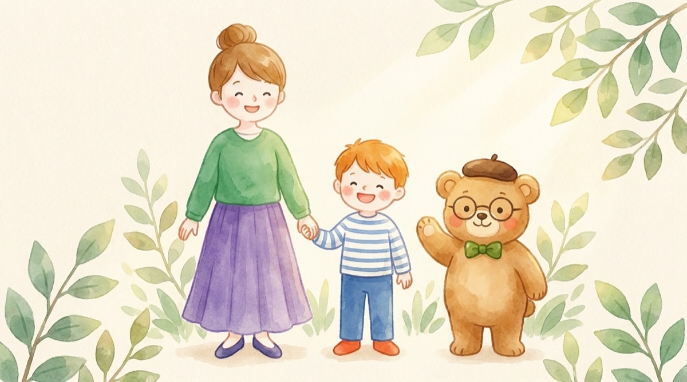
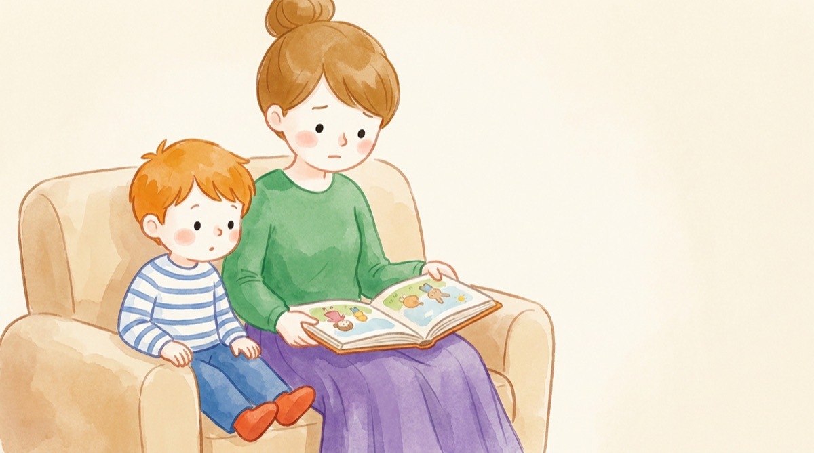
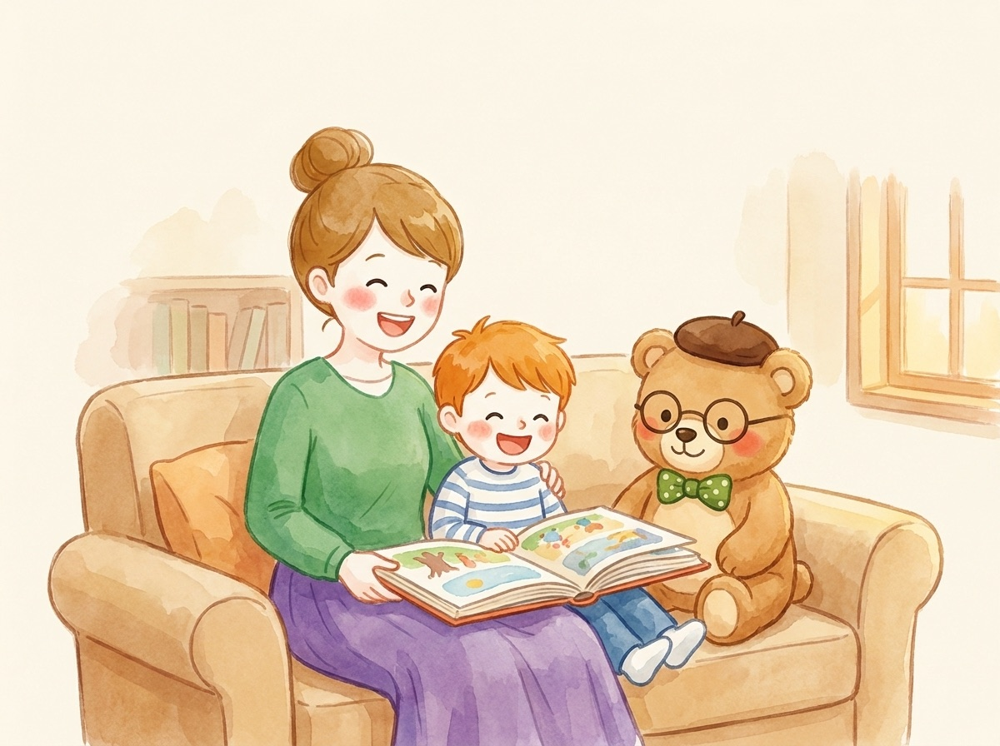

おうち英語キズナClub 無料オンライン個別講座
毎日の声かけと、
親である私たち自身の子ども時代から、
わが家の学びの道のりを考える、
マンツーマンの90分です。

参加を申し込む（無料）
同じ「がんばってね」でも、子どもには励ましに聞こえる日と、プレッシャーに聞こえる日があります。あなたのご家庭でよく使う言葉を書き出して、子どもにどう届いているかを一緒に見ていきます。
親に言われてうれしかった言葉、苦しかった言葉。いまの声かけの中には、自分が受け取ってきた言葉が混ざっていることがあります。無理に掘り下げることはしません。1対1なので、話せる範囲で、ゆっくり思い出していきましょう。
小学校、中学校、その先の進路まで。いま決めてしまうのではなく、子どもが自分で選んでいけるように、親はどんな関わり方を大切にしたいか。わが家の方向を一枚にまとめます。

子どもの未来は、親が決めるものではなく、子ども自身が選んでいくものだと思っています。
だからこそ、親ができるのは「正しい道」を用意することより、毎日の関わり方を整えておくこと。その関わり方の根っこには、私たち自身が子どもの頃に受け取ってきたものがあります。
早くから受験勉強を始めるための講座ではありません。家庭が、子どもにとって安心して挑戦できる場所であり続けるための90分にしたいと考えています。
息子と10年、おうち英語を毎日続けてきた母です。フルタイムで働きながら、絵本や歌、日々の声かけを積み重ねてきました。コーチングを学び、いまは親子の関わり方に寄り添う活動をしています。
講座でお話しするわが家の例は、あくまで一つの家庭の話です。お子さんもご家庭もそれぞれ違うので、「うちの場合はどうだろう」と考えるための材料として聞いてください。
| 講座名 | 子どもの未来を育む学びのロードマップ講座 |
|---|---|
| 形式 | オンライン（Zoom）・マンツーマン（講師と1対1） |
| 時間 | 90分 |
| 参加費 | 無料 |
| 日時 | お申し込み後、LINEでご都合をうかがって個別に決めます |
| 対象 | お子さんとの関わり方を見つめ直したい保護者の方 |
参加は無料です。
おうち英語キズナClubの公式LINEを友だち追加して、
「ロードマップ講座」とメッセージを送ってください。
日程の調整とZoomのご案内を、LINEでお届けします。
すでに友だち追加している方は、トーク画面から
「ロードマップ講座」と送ってください。
子どもが自分で未来を選んでいけるように。
そのために、今の私たちにできることを一緒に。